9 AutenticacionAPI
Índice
- Introducción
- Instalación
- Crear Middleware 3.1 Creación proyecto
- Registrando Middleware en Kernel
- Middleware en Rutas
- Middleware en Grupos de Rutas
- Middleware en Construcciones
- Api Auth Sanctum
- CONCLUSIONES
Introducción
Hemos visto ya modelos y relaciones.
Este punto es determinante para todas las aplicaciones, como es el Middelware.
Teoría ApiRestful
Antes de practicar las diferentes API Restful, es imprescindible haber podido revisar la teoría API que está en este bloque de contenidos para poder comprender todo lo que se está realizando
- Para qué sirve? Autenticación o rol en un servicio
- Hay dos tipos de enfoque
- Middleware: Cómo es, cómo hacerlo, cómo afecta a cada sección, cómo marcarlo a diferentes rutas
- Autenticación : Parte fundamental, vamos a comenzar por trabajar con API (Sanctum), también se puede implementar en frontales.
- Pero empezar por aquí es más importante para poder usar en Front.
- Lo Crearemos a través de token
- Lo veremos a través de vistas cuando esto se comprenda en profundidad.
Manos a la obra.
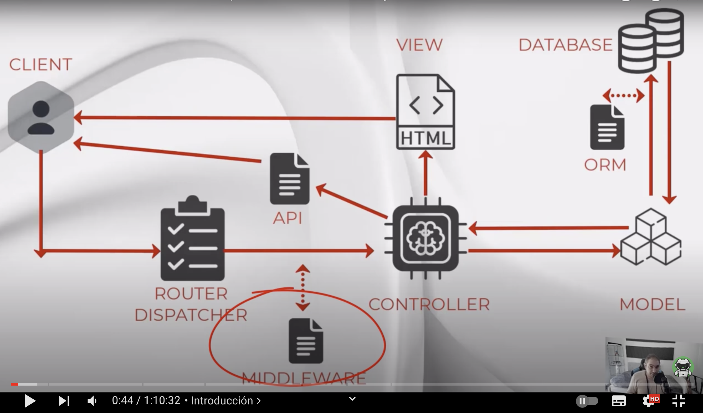
Crear Middleware
Lo primero que hacemos es crear un nuevo proyecto.
- Crear Proyecto
composer create-project laravel/laravel middlewareauth
- Configurar base de datos
En lugar de conectar a mysql como hace en el vídeo, ya sabemos que la versión 11 lo hace con SQLITE (
fichero: .env)
* ¿Dónde están los Middleware?
Por defecto están en app/Http/Middleware pero ya desde la v11 no vienen precargados
Antes, como se ve en el vídeo nos ofrecían ya cargados algunos de ellos como:
Authenticación, encriptación de Cookies...
Lo primero por tanto es aprender a crearlo.
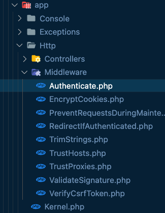
* Crear un middleware
php artisan make:middleware Example
INFO Middleware [app/Http/Middleware/Example.php] created successfully.
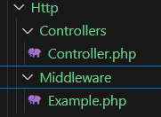
- No existe convención para el nombre, por ello hemos usado Example
- Si vemos el código, vemos como hace uso de una característica avanzada y reciente de PHP llamada Closure, de la que se debe conocer un poco su funcionamiento dada su importancia, si observamos las librerías cargadas, la encontramos.. Enlace a artítuclo y referencia manual sobre Closures
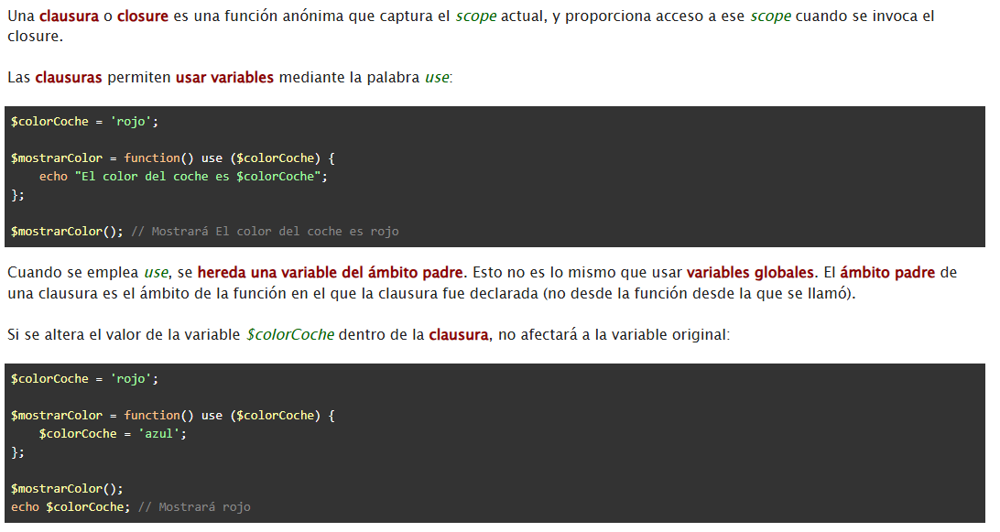
namespace App\Http\Middleware;
use Closure;
use Illuminate\Http\Request;
use Symfony\Component\HttpFoundation\Response;
class Example
{
/**
* Handle an incoming request.
*
* @param \Closure(\Illuminate\Http\Request): (\Symfony\Component\HttpFoundation\Response) $next
*/
public function handle(Request $request, Closure $next): Response
{
return $next($request);
}
}
- Como medio de protección, se encarga de gestionar la acción de protección o adición sobre la ruta
- Por ello, antes de que se ejecute el controlador, se ejecutará el Middleware
- La Closure Next indica el siguente valor del flujo, a donde corresponda
- Dentro de la lógica, si no cumple, el next lo redigirimos a otra ruta (cómo con la autenticación que lo bloqueamos)
-
- Ejemplo clásico es el de una autenticación
- O el de pertenecer a un rol concreto.
Un ejemplo, podría ser (este método NO existe, no se crea):
public function handle(Request $request, Closure $next): Response
{
// Método hasRole() en User.php no existe aún, daría error.
if(!Auth::user()->hasRole('admin') ){
abort(403);
}
return $next($request);
}
Ya sabemos crearlo, y retornar el flujo
Ahora, nuestro controlador Example debe estar registrado en nuestro contenido para poder llamarlo. Es lo que haremos en la siguiente sección
Registrando Middleware ~~en Kernel~~
IMPORTANTE. Cambios en la versión 11.
!!! alert "Actualización Laravel 11 Middleware"
Esta sección**NO** se puede seguir cómo en el tutorial, hay que hacerlo todo en **bootstrap/appp**.php, ya que No se configura desde el **Kernel**.php
Por tanto, tienes más info en la documentación de Laravel y en el siguiente artículo sobre Middleware, y en el resumen de los cambios Middleware más importantes
Vamos a registrar los nuevos Miidleware en el archivo bootstrap/app.php
Aquí es donde vamos a marcar todos los recursos compartidos
Abre este archivo y busca la sección donde se registran los middlewares. Deberías ver algo como esto:
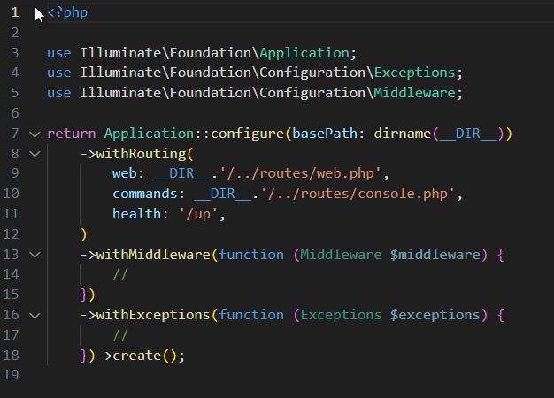
Aquí se definen los que podramos utilizar. Y donde pueden ser usados.
-
Grupo GLOBAL, aplican a todo, si está protegida o no...Por ejemplo seguridad, validación, prevención... Se ejecutan siempre
-
Si quieres que el middleware se aplique a todas las solicitudes, regístralo en la sección
$app->middleware([]): dentro del archivo app.php
$app->middleware([
'example'=> \App\Http\Middleware\Example::class,
]);
- Ahora si se le da nombre porque a los otros no hacía falta ya que se aplicaban siempre
- Aquí vamos a definir ahora nuestro example:
'example' => \App\Http\Middleware\Example::class,
Middleware en Rutas
Lo invocamos a través de example, pero ¿Cómo protegemos la ruta?
- Lo normal es protegerla explicitamente, directamente en la ruta. La más sencilla:
ruta:
routes/api.php
API: Vamos a cargar API en nuestro proyecto primero
php artisan api:install
Antes de añadir la ruta a la API vamos a crear el controlador de example, que no lo hemos creado
php artisan make:controller ExampleController
Le añadimos la función de ejemplo a la clase ExampleController:
//Añadimos función de ejemplo:
public function index(){
return response()->json("Hello World", 200);
}
Importante agregarlo en ``api.php```
use App\Http\Controllers\ExampleController;
Ahora mismo estamos aprendiendo el middleware de forma general, nos vale para las vistas como para el monolito.
- Volvemos a la ruta api y la creamos Esta sería la ruta básica sin protección para la raiz:
Route::get('/', [ExampleController::class, 'index']);
Ahora le pasamos el valor example que registramos antes al middleware para proteger la ruta, y ejecutarlo antes de la ruta
Route::middleware('example')->get('/', [ExampleController::class, 'index']);
Para notar la diferencia creamos otra ruta:
//Le damos también un nombre de ruta con el método name
Route::get('/no-access', [ExampleController::class, 'no-access'])->name('no-access');
//Añadimos una segunda función de ejemplo para observar la diferencia:
public function noAccess(){
return response()->json("No access", 200);
}
Una vez hecho esto, nosotros en la clase del Middleware Example podríamos hacer la construcción que necesitamos. Por ejemplo:
ruta: app/http/Example.php
- Vamos a redirigir nuestro Miidleware siempre a la nueva ruta de ejemplo (podemos comentar next ya que no se ejecutará)
return redirect()->route('no-access');
//return $next($request);
Antes de nada migramos todo el contenido
php artisan migrate
- O a través del constructor del controlador
Levantamos el servicio
php artisan serve
Y podemos realizar nuestras peticiones en thunder Client La primera va a ser api al raiz, que dará NO ACCESS:
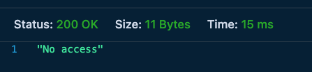
http://127.0.0.1:8000/api/
Si descomentáramos en el middleware Example.php y dejáramos el original si que dejaría pasar y daría OK HelloWorld
//return redirect()->route('no-access');
return $next($request);
Así, en estas clases Middleware podríamos aplicar toda la protección, podríamos hacer Grupos de Rutas, que es lo que vemos en el siguiente bloque
Note
Como siempre, vamos a hacer algunos cambios, es bueno hacernos una copia para que se quede todo lo realizado en diferentes pasos y poder probar diferentes versiones.
- Recuerda, esta version 1 trata de los middleware directo en rutas hechos hasta ahora
Middleware en Grupos de Rutas
IMPORTANTE. Cambios en la versión 11.
!!! alert "Actualización Laravel 11 Middleware"
Esta sección**NO** se puede seguir cómo en el tutorial, hay que hacerlo todo en **bootstrap/appp**.php, ya que No se configura desde el **Kernel**.php
De esta manera, no tendremos que repetir las llamadas en las rutas en el archivo api.php
MiddleWare en todas las rutas API o Web..
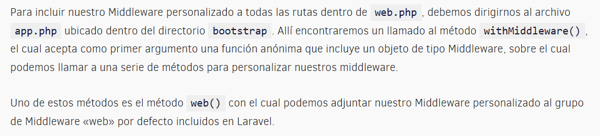
<?php
use Illuminate\Foundation\Application;
use Illuminate\Foundation\Configuration\Exceptions;
use Illuminate\Foundation\Configuration\Middleware;
return Application::configure(basePath: dirname(__DIR__))
->withRouting(
web: __DIR__.'/../routes/web.php',
commands: __DIR__.'/../routes/console.php',
health: '/up',
)
->withMiddleware(function (Middleware $middleware) {
$middleware->web(\App\Http\Middleare\TestMiddleware::class);
})
->withExceptions(function (Exceptions $exceptions) {
//
})->create();
WithMiddleware (function ... recibe una función con todas las rutas que se contienen dentro de este grupo.
->withMiddleware(function (Middleware $middleware) {
//
$middleware->alias(['example' => \App\Http\Middleware\Example::class]);
$middleware->group('api', ['example']);
$middleware->api(['example']);
Ya sabemos aplicar middleware de forma singular y en grupo, el tercer formato sólo es válido en una buena estructuración de controladores, siguiente apartado
Middleware en Construcciones
ruta: routes/api.php
Para probar esta técnica, lo primero, dejamos las dos rutas sin el middleware, las comentamos:
Route::get('/', [ExampleController::class, 'index']);
/*
Route::middleware('example')->group(function(){
//Cambiamos la ruta axample aquí dentro de este grupo:
Route::middleware('example')->get('/', [ExampleController::class, 'index']);
});
*/
Y nos vamos al controlador para crearlo, ruta: app/Http/Controllers/ExampleController.php
//añadiendo el middleware en el constructor:
public function __construct(){
//le indico que quiero utilizar el middleware
this->middleware('example');
}
Hace mucho hincapié en tener muy claro la buena estructuración de los controladores para usar esto:
- Se explica un error circular de too many request si lo añades en controlador y el middleware le redirige a NO ACCESS..
- Casos prácticos clásicos: administración de panel de usuario o autenticación
- Ante la duda: hacerlo en la ruta
- Ahora entendemos el concepto, podemos ya empezar a usarlo y entender bien las autenticaciones, que son la base para poder construir más bloques middleware
Api Auth Sanctum (enlace)
Vamos a realizar el primer sistema de autenticación a través de API.
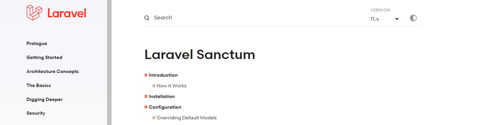
Documentación oficial Laravel Sanctum
Se basa en el método "Token al portador o bearer tokens".
- Usuario facilita email y password desde el frontal VUE, JS, REACT...
- Generamos token y se lo devolvemos al frontal
-
Ahora cada vez que quiera pedirnos información ha de enviarnos ese token para que back verifique
-
Laravel ya nos incluye autenticación con la librería SANCTUM
Controlador AuthController
¿Cómo funciona? Creamos controlador que permita crear y loguear usuarios, ya tenemos modelo de usuarios USER
php artisan make:controller AuthController
INFO Controller [app/Http/Controllers/AuthController.php] created successfully.
Ruta: app/Http/Controllers/AuthController.php
- Aquí creamos algunas funciones para registrar a nuestros usuarios
- Necesitamos crear primero una request para validar usuarios
Request CreateUserRequest
php artisan make:request CreateUserRequest
INFO Request [app/Http/Requests/CreateUserRequest.php] created successfully.
Va a ser una request muy sencilla. En el authorize() cambiamos a true
public function authorize(): bool
{
return true;
}
Y en reglas:
public function rules(): array
{
return [
//En las reglas, solicitamos los datos necesarios:
'name' => 'required',
//el email ha de ser único dentro de la tabla usuarios en el campo email
'email' => 'required|email|unique:users, email',
'password' => 'required', //podriamos indicar longitud minuma...
];
}
- Ahora si en el AuthController, añadimos las librerias
namespace App\Http\Controllers;
use App\Http\Requests\CreateUserRequest;
use App\Http\Requests\LoginRequest;
use App\Http\Requests\CreateUserRequest as RequestsCreateUserRequest;
use Illuminate\Support\Facades\Hash;
use App\Models\User;
use Illuminate\Support\Facades\Auth;
- Configuramos las funciones de la clase AuthController, con lo que dicho controlador quedaría:
namespace App\Http\Controllers;
use App\Http\Requests\CreateUserRequest;
use App\Http\Requests\LoginRequest;
use App\Http\Requests\CreateUserRequest as RequestsCreateUserRequest;
use Illuminate\Support\Facades\Hash;
use App\Models\User;
use Illuminate\Support\Facades\Auth;
use Illuminate\Http\Request;
use User as GlobalUser;
class AuthController extends Controller
{
//
public function store(CreateUserRequest $request)
{
try {
// Crear el usuario
$user = User::create([
'name' => $request->name,
'email' => $request->email,
'password' => Hash::make($request->password),
]);
// Devolver respuesta con token de API
return response()->json([
'status' => true,
'message' => 'User created successfully',
'token' => $user->createToken("API TOKEN")->plainTextToken
], 201);
} catch (\Exception $e) {
// Manejo de errores generales
return response()->json([
'status' => false,
'message' => 'User registration failed',
'error' => $e->getMessage()
], 500);
}
}
}
Request Login User
Tras el create, definimos ahora el loginUser: De nuevo, volvemos a necesitar un loginRequest, lo creamos:
php artisan make:request LoginRequest
INFO Request [app/Http/Requests/LoginRequest.php] created successfully.
Cambiamos el authorise a true y pedimos:
public function rules(): array
{
return [
'email' => 'required|email',
'password' => 'required',
];
}
Clase Auth de Laravel (importante)
Ahora generamos las validaciones, Laravel nos ofrece una clase muy muy útil que es la clase Auth
Desde nuestro controlador AuthController.php -> Podemos: //1 acceder a los datos del usuario logueado //attempt, tratar de loguear a un usuario
public function loginUser(LoginRequest $request)
{
try {
// Obtener credenciales validadas
$credentials = $request->validated();
// Intentar autenticación
if (!Auth::attempt(['email' => $credentials['email'], 'password' => $credentials['password']])) {
return response()->json([
'status' => false,
'message' => 'Email & password do not match our records'
], 401);
}
// Obtener usuario autenticado
$user = User::where('email', $credentials['email'])->firstOrFail();
return response()->json([
'status' => true,
'message' => 'User logged in successfully',
'token' => $user->createToken("API TOKEN")->plainTextToken
], 200);
} catch (\Exception $e) {
return response()->json([
'status' => false,
'message' => 'Login failed',
'error' => $e->getMessage()
], 500);
}
}
Ya CASI hemos finalizado la creación de nuestro authController
Laravel 11. Configuración extra HasApiTokens.
En Laravel 11, debemos configurar un poco más nuestro modelo User para que podamos hacer uso de las API Tokens generadas.
Agregar HasApiTokens en el modelo User
Abre app/Models/User.php y asegúrate de agregar HasApiTokens:
<?php
namespace App\Models;
use Illuminate\Database\Eloquent\Factories\HasFactory;
use Illuminate\Foundation\Auth\User as Authenticatable;
use Illuminate\Notifications\Notifiable;
use Laravel\Sanctum\HasApiTokens; // Asegurar que está importado
class User extends Authenticatable
{
use HasApiTokens, HasFactory, Notifiable; // Agregar HasApiTokens
protected $fillable = [
'name',
'email',
'password',
];
}
a
Configuración de las rutas:
Ya que tenemos nuestro controlador, necesitamos especificarlo en nuestras rutas
Ruta: api.php
Eliminamos las que creamos previamente (las comento)
//Route::get('/no-access', [ExampleController::class, 'noAccess'])->name('no-access');
//Route::get('/', [ExampleController::class, 'index']);
Y generamos nuevas rutas:
Route::post('/create', [AuthController::class, 'store'])->name('create');
Route::post('/login', [AuthController::class, 'loginUser'])->name('login');
//ruta para obtener un dato protegido, aprovechamos la de laravel.
Route::middleware('auth:sanctum')->get('/user', function (Request $request) {
return $request->user();
});
Una vez redefinida nuestra API, vamos a probarla:
Probando la API:
Levantamos el servicio:
php artisan serve
Nueva petición en thunderclient:
Si todo ha ido bien; debe crear y logar un ususario:
Create user:
Tipo POST , en ThunderClient o Postman, ponemos la ruta http://localhost:8000/api/createsin autenticación y escribimos:

en el body, escribimos nuestro primer usuario
{
"name": "nombre",
"email": "nombre@test.es",
"password": "1234"
}
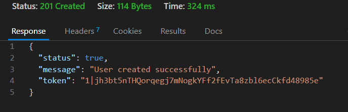
Guarda ese TOKEN ya que lo vas a necesitar para autenticarte!
Probando /user sin autenticar.
Si intentamos autenticarnos a la ruta user sin pasarle el token, nos fallará.
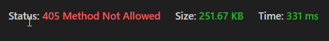
Login User:
Vamos a acceder indicándole el token:
En la Autorización debemos entregar el BEARER token al usuario, eso se hace desde los headers así:
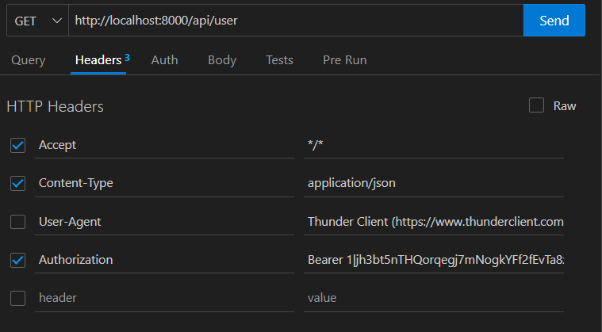
Y me devuelve el OK además de, por convención, los datos del usuario autenticado:
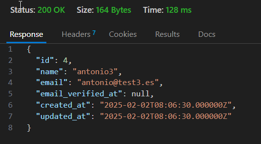
Ya sabemos cómo añadir el middleware auth Sanctum mediante sistema de token para poder autenticar a los usuarios.
CONCLUSIONES
- Primer bloque de middleware muy importante
- Antes o después, nos tendremos que enfrentar a él
- Herramienta Auth es muy importante para backend
- Lo siguiente clase complementamos para los procesos de las autenticación con vistas, donde se checkea la propia autenticación de las vistas
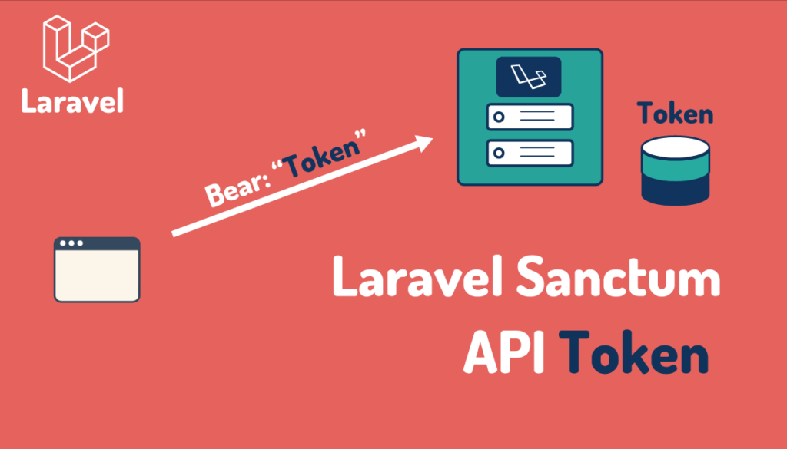